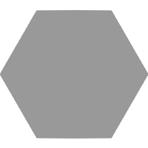
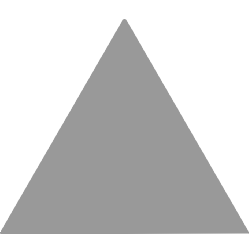
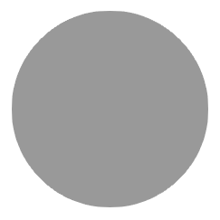
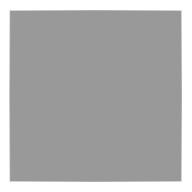
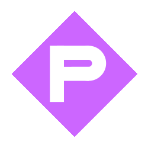

モジュール詳細：盗用
+ +
盗用モジュールには合格ボタン（チェックマーク）と報告ボタン（注意マーク）がある。画面にはモジュール内部にある、色のついた図形(シンボル)が複数個描かれた紙が表示される。
結果のシンボルの列が、原典(付録 SOURCE)を修正したものと一致するかどうかを判定し、4枚の紙をチェックする。
シリアルナンバーの一番左の数字を取る。このページの表を使用し図形を決定する。この図形すべてを、4枚の紙と2ページ目の60個の図形のシーケンスから削除する。
次に、シリアルナンバーの左から2番目の数字を取る。同じ表を使用し色を決定する。この色すべてを、4枚の紙と2ページ目の60個の色のシーケンスから削除する。
| 図形 |  |  |  |  | |
|---|---|---|---|---|---|
| 数字 | 0/5 | 1/6 | 2/7 | 3/8 | 4/9 |
| 色 |  |
現在の紙と両方のシーケンス内の空白を取り除く。それぞれのシーケンスは48個になるはずである。それらを、1番目の図形には1番目の色、2番目の図形には2番目の色…と割り当てる。
4枚の紙すべてが、この48個の色と図形のシーケンスと比較される。
紙に残っているシンボルが、シーケンス内の連続するシンボルの列と完全に一致する場合、報告ボタンを押す。それ以外の場合、合格ボタンを押す。いずれの場合も、現在の用紙は取り除かれ、ストックされた次の紙が表示される。
間違ったボタンを押した場合、ミスが記録される。モジュールを解除するには、正しいかどうかにかかわらず、4枚の紙をすべてチェックしなければならない。